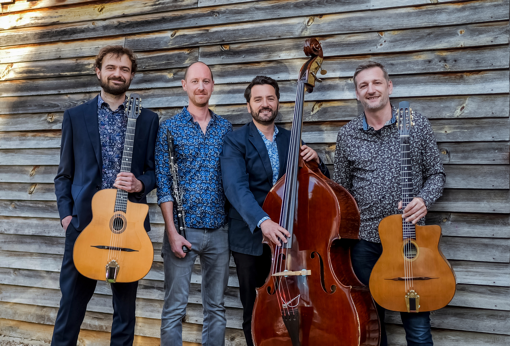
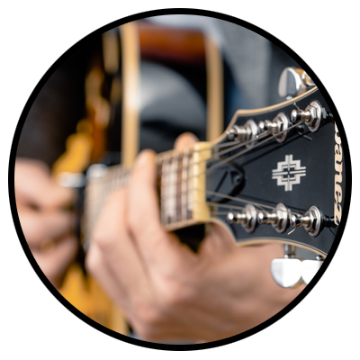
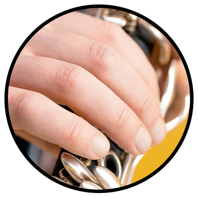
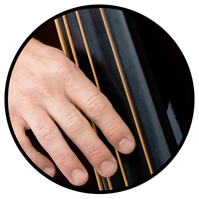
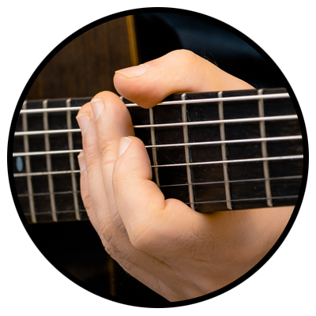

Tchikiswing vous propose un voyage dans les années 50 pour retrouver le temps d’un concert, l’ambiance des clubs de jazz parisiens de Saint-Germain-Des-Prés.
C’est un hommage aux musiciens de génie, créateurs d’un son unique et de mélodies intemporelles que ce groupe a choisi de vous offrir.
Au répertoire : Django Reinhardt et les grands noms du jazz, Count Basie, Gerry Mulligan, Tadd Dameron
Mais aussi des musiciens contemporains tels que Romane, Angelo Debarre, Stochelo Rosenberg...
Guitares : Paul Beuillé & Pierre Bectard
Clarinette : Clément Salles
Contrebasse : Fabrice Renailler
C’est un hommage aux musiciens de génie, créateurs d’un son unique et de mélodies intemporelles que ce groupe a choisi de vous offrir.
Au répertoire : Django Reinhardt et les grands noms du jazz, Count Basie, Gerry Mulligan, Tadd Dameron
Mais aussi des musiciens contemporains tels que Romane, Angelo Debarre, Stochelo Rosenberg...
Guitares : Paul Beuillé & Pierre Bectard
Clarinette : Clément Salles
Contrebasse : Fabrice Renailler
 |
Paul Beuillé Guitariste soliste et fondateur du groupe, c'est à l'age de 11 ans que Paul BEUILLE découvre la Guitare qui sera son instrument de prédilection. L'apprentissage de la musique se fera en autodidacte à la decouverte du repertoire de Django.R et au contact de nombreux amis musiciens Toulousains. Puis, deux années d'études à la Music Halle où il suit les cours de Thierry Di Fillipo. Il se consacrera dés lors au swing et au jazz manouche. L'experience de la scene commence en 2008. C'est lors d'une master-class de Samy DAUSSAT qu'il rencontre les futurs membres de Tchikipomp qui vois le jour en 2012. En 2016 la formation évolue pour se professionnaliser et devenir TchikiSwing. Il participe à plusieurs formations musicales (SHADU, Martin's Jazz Band, Amoul Solo, etc...) mais c'est avec la rencontre ou à l'écoute de musiciens comme Romane, Bireli Lagrenne, Stochelo Rosenberg ou plus recement Adrien Moignard, ainsi que nombreux jazzmans americains que son jeu se developpe. Plus récemment, il rejoint le groupe La tribu de Bergame. |
| Clément Salles Il débute la clarinette au CNR de Toulouse à l’âge de 7 ans. Il découvre la pratique du Jazz Manouche en Angleterre au cours d’une formation de luthier, et en profite pour participer à la formation du groupe Swing 1664 qui écume pubs et festivals des Midlands pendant 4 années. Il retourne à Toulouse et passe sa Licence en Musicologie Jazz, intègre «Les Vents Malins» et «Kassla Datcha», et débute l’apprentissage du saxophone. Il fonde ensuite le groupe « Sheik of Swing », toujours en activité avec de très nombreux concerts en France et à l’étranger. Plus récemment, il participe à la création du quintet balkan/jazz Nuit Nomade, rejoint le groupe Endvatchei, et collabore avec diverses formations musicales toulousaines (Pulse, Les Tires Bouchons, Sandrine Cabadi, J’ai rdv avec vous, Nomad Frequencies…)et internationale. |
 |
 |
Fabrice Renailler Venu de la basse électrique qu'il découvre vers 20 ans, Fabrice débute sur scène dans les bals et fêtes de village du sud-ouest de la France. Autodidacte et polyvalent, il part sur les routes basse et ampli sur le dos, et joue dans de nombreuses formations du Mali au Pérou, jusqu'en Argentine ou il suit une année de formation aux musiques actuelles à l'ITMC de Buenos Aires. Rock, funk, musiques latines, jazz manouche, il développe et enrichie son jeu en se mettant au service du morceau, de ses collègues rythmiciens ou solistes. Passionné du swing qui fait danser, vous pouvez aussi le retrouver sur scène avec le quintet rock déluré Tiger Tutu, le groupe de soul funk Sugar Bones ou les formations du Chili ou d'ailleurs croisées sur son chemin. |
| Pierre Bectard-Huëber Guitariste seine-et-marnais installé à Toulouse, passionné de swing et de jazz manouche, il commence la basse électrique à 11 ans. Il se tourne vers la guitare acoustique à 16 ans après avoir découvert ce style à Paris, notamment à La Chope des Puces et au Jazz des Tuileries. Il poursuit son apprentissage en se concentrant sur l’accompagnement, inspiré par des guitaristes comme Hono Winterstein, Nous’che Rosenberg et Mathieu Chatelain. Depuis 2013, il réalise de nombreux remplacements au sein de formations parisiennes et de la région, et accompagne des musiciens reconnus tels que Daniel John Martin, Tatiana Eva-Marie, Mayo Hubert et d’autres. |
 |
Guitariste soliste et fondateur du groupe, c'est à l'age de 11 ans que Paul BEUILLE découvre la Guitare qui sera son instrument de prédilection.
L'apprentissage de la musique se fera en autodidacte à la decouverte du repertoire de Django.R et au contact de nombreux amis musiciens Toulousains. Puis, deux années d'études à la Music Halle où il suit les cours de Thierry Di Fillipo. Il se consacrera dés lors au swing et au jazz manouche.
L'experience de la scene commence en 2008. C'est lors d'une master-class de Samy DAUSSAT qu'il rencontre les futurs membres de Tchikipomp qui vois le jour en 2012. En 2016 la formation évolue pour se professionnaliser et devenir TchikiSwing.
Il participe à plusieurs formations musicales (SHADU, Martin's Jazz Band, Amoul solo, etc...) mais c'est avec la rencontre ou à l'écoute de musiciens comme Romane, Bireli Lagrenne, Stochelo Rosenberg ou plus recement Adrien Moignard, ainsi que nombreux jazzmans americains que son jeu se developpe. Plus récemment, il rejoint le groupe La Tribu de Bergame.
Clément débute la clarinette au CNR de Toulouse à l’âge de 7 ans.
Il découvre la pratique du Jazz Manouche en Angleterre au cours d’une formation de luthier, et en profite pour participer à la formation du groupe Swing 1664 qui écume pubs et festivals des Midlands pendant 4 années.
Il retourne à Toulouse et passe sa Licence en Musicologie Jazz, intègre «Les Vents Malins» et «Kassla Datcha», et débute l’apprentissage du saxophone. Plus récemment, il participe à la création du quintet balkan/jazz Nuit Nomade, rejoint le groupe Endvatchei, et collabore avec diverses formations musicales toulousaines (Pulse, Les Tires Bouchons, Sandrine Cabadi, J’ai rdv avec vous, Nomad Frequencies…).
Venu de la basse électrique qu'il découvre vers 20 ans, Fabrice débute sur scène dans les bals et fêtes de village du sud-ouest de la France.
Autodidacte et polyvalent, il part sur les routes basse et ampli sur le dos, et joue dans de nombreuses formations du Mali au Pérou, jusqu'en Argentine ou il suit une année de formation aux musiques actuelles à l'ITMC de Buenos Aires. Rock, funk, musiques latines, jazz manouche, il développe et enrichie son jeu en se mettant au service du morceau, de ses collègues rythmiciens ou solistes.
Passionné du swing qui fait danser, vous pouvez aussi le retrouver sur scène avec le quintet rock déluré Ginger Spanking, le groupe de soul funk Sugar Bones ou les formations du Chili ou d'ailleurs croisées sur son chemin.
Pierre Bectard-Huëber
Guitariste seine-et-marnais installé à Toulouse, passionné de swing et de jazz manouche, il commence la basse électrique à 11 ans.
Il se tourne vers la guitare acoustique à 16 ans après avoir découvert ce style à Paris, notamment à La Chope des Puces et au Jazz des Tuileries.
Il poursuit son apprentissage en se concentrant sur l’accompagnement, inspiré par des guitaristes comme Hono Winterstein, Nous’che Rosenberg et Mathieu Chatelain.
Depuis 2013, il réalise de nombreux remplacements au sein de formations parisiennes et de la région, et accompagne des musiciens reconnus tels que Daniel John Martin, Tatiana Eva-Marie, Mayo Hubert et d’autres.
Contact Booking - Technique :
Paul : (+33)6.07.39.97.34
Fabrice : (+33)6.75.77.45.61
tchikiswing@gmail.com
Téléchargements : Fiche technique / Plan de scène